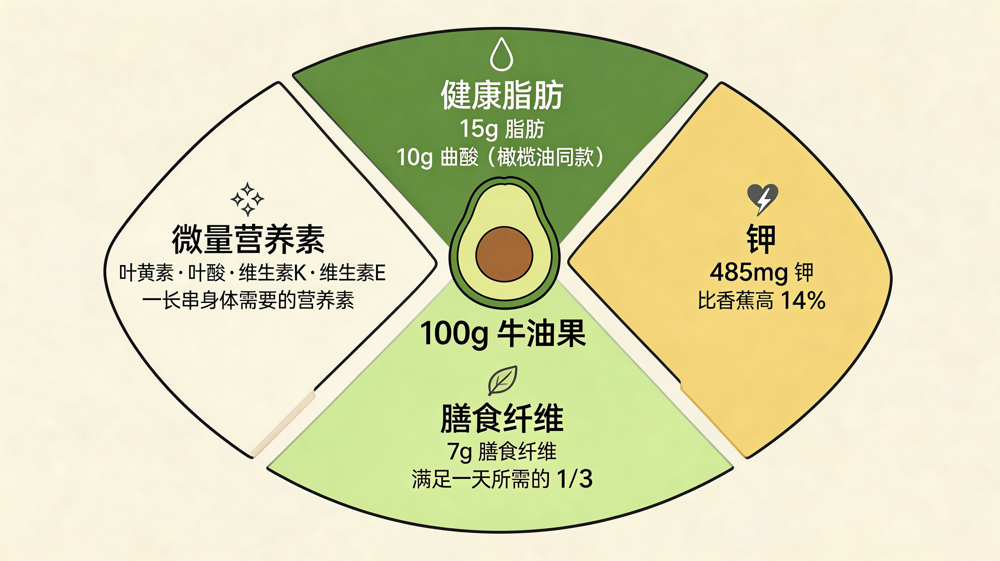
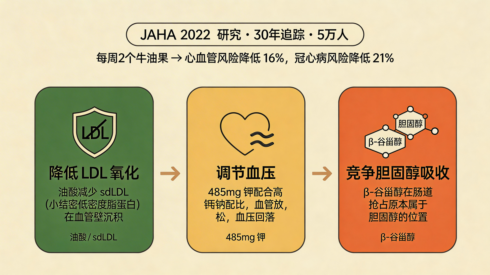
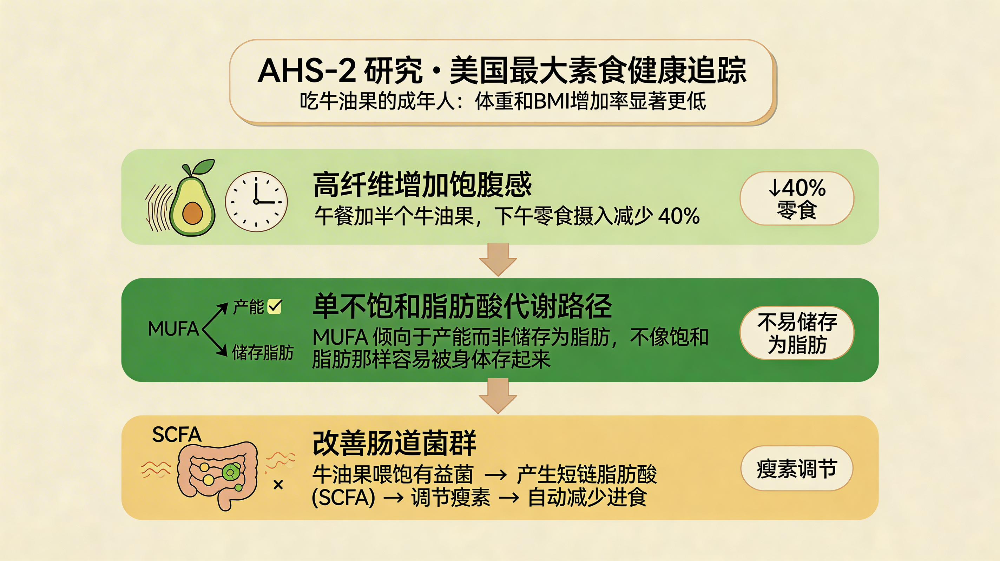
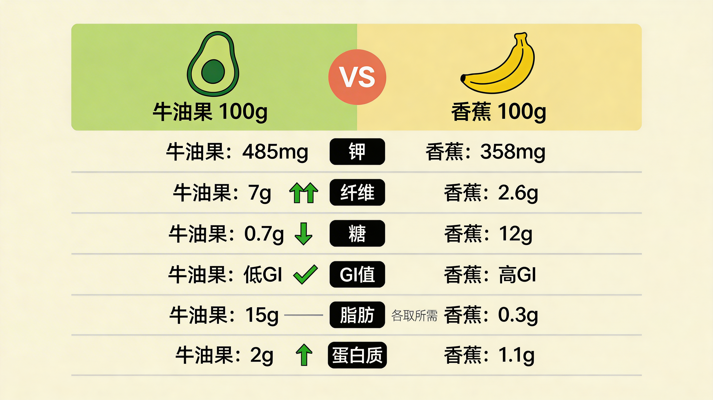
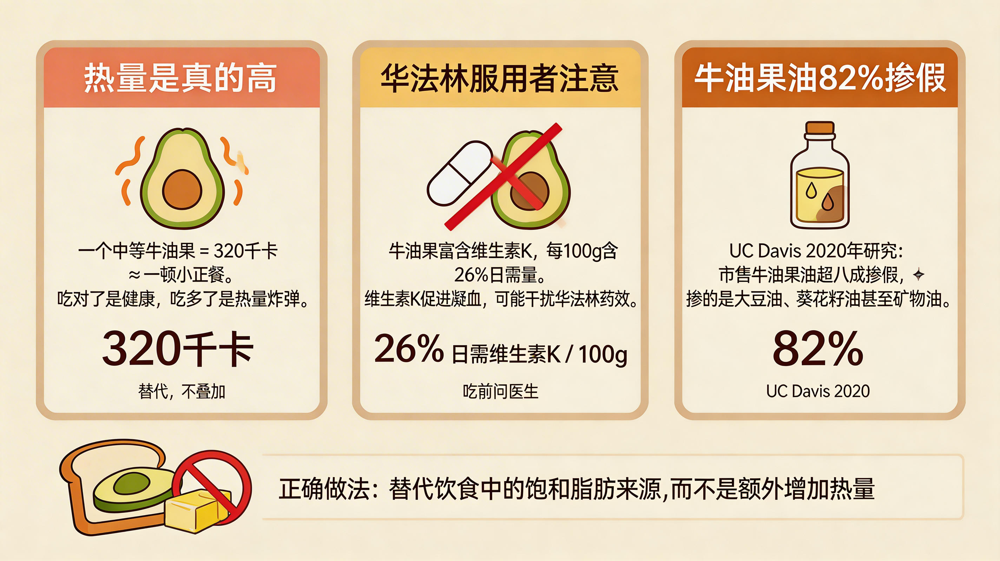

一颗牛油果的热量约等于3碗米饭——所以你信了十年"它是热量炸弹"？
但哈佛大学的科学家们刚刚花了好几年研究这颗果子，结论可能跟你想的不一样。
过去十年，你每次把牛油果放进购物车，旁边大概会闪过一丝顾虑："热量那么高，真的能吃吗？"
同事劝你"别吃这个，会胖"，营养博主把它跟炸鸡并列。你开始怀疑自己是不是真的交了不少"健康智商税"。
而你不知道的是：美国心脏协会（AHA）专门点名推荐它，美国FDA认证它为"健康全食品"，哈佛用了30年追踪5万人的研究，就为了搞清楚它到底健不健康。
读完全文，你会清楚知道：牛油果到底值不值它的价格、每天吃多少合适、什么人真的要控制，以及它真正值得买的理由。
先说热量。
100克牛油果大约160千卡，一个中等大小的牛油果差不多有320千卡——这确实不低，相当于三碗米饭。
但问题来了：你吃三碗米饭，摄入的是大量碳水化合物和少量营养素。你吃一个牛油果，摄入的是什么呢？
15克脂肪，其中10克是油酸——橄榄油里的那种好东西。
485毫克钾，比香蕉高出14%。
7克膳食纤维，满足一天所需的三分之一。
叶黄素、叶酸、维生素K、维生素E……一长串你可能叫不上名字、但身体很需要的营养素。
哈佛研究人员在评估食物营养价值时有一个核心标准："评估一种食物，不能只看它的热量数字，要看每一口热量换来了多少营养。"（来源：Harvard T.H. Chan School of Public Health, The Obesity Prevention Source）
按这个标准，牛油果是妥妥的高性价比选手。
它的单不饱和脂肪酸（MUFA）占比高达71%，而饱和脂肪酸只有16%。这种脂肪酸构成，研究文献中常被与地中海饮食的心脏保护机制关联讨论。
换句话说，你吃进去的每一口热量，都被营养素精密包装过。这跟三碗白米饭的待遇，完全不同。

三大权威机构，同一个问题，给出了一致的答案。这事不常见。
先看哈佛。
2022年，《JAHA》（美国心脏协会期刊）发布了一项长达30年的追踪研究，样本超过5万人。研究结论是：每周吃2个牛油果的人，心血管疾病风险降低16%，冠心病风险降低21%。
这不是小样本的短期实验，是30年的随访数据。
再看AHA本身。
美国心脏协会早在多年前就把牛油果列入了"推荐食品清单"，明确建议每周食用2个，替代饮食中的饱和脂肪来源。
JAHA 2023年的专项研究则给出了更具体的机制：每天食用牛油果，可显著降低总胆固醇和LDL（坏胆固醇），同时不影响HDL（好胆固醇）。
为什么它对心血管有保护作用？
核心在于三点：
第一，油酸降低LDL氧化。 小而密的低密度脂蛋白（sdLDL）最容易沉积在血管壁形成斑块，而牛油果里的油酸能减少这种氧化。
第二，钾调节血压。 485毫克钾配合高钾低钠的天然配比，帮助血管放松、血压回落。
第三，植物甾醇竞争吸收。 β-谷甾醇在肠道里抢占了原本属于胆固醇的位置，身体吸收的胆固醇自然就少了。
这不是玄学，是可以被实验室数据验证的生理机制。

这是最多人关心的部分，我要直接说结论。
能吃。而且可能吃得越多，长得越慢。
证据来自AHS-2研究——美国最大的素食者健康追踪项目，一项发布在《Academy of Nutrition and Dietetics》上的研究发现：习惯性食用牛油果的成年人，体重和BMI的增加率显著低于非食用者。
60岁以上的人群更明显。吃牛油果的老年人，随年龄增长的体重下降趋势更缓——肌肉流失更少。
为什么？
原因一：高纤维增加饱腹感。午餐加半个牛油果，下午零食摄入减少40%。你少吃了零食，整体热量反而更可控。
原因二：单不饱和脂肪酸代谢路径更倾向于产能而非储存为脂肪。不像饱和脂肪，吃进去容易被身体存起来。
原因三：改善肠道菌群。牛油果喂饱了肠道里的有益菌，它们产生的短链脂肪酸（SCFA）会调节瘦素等饱腹激素，帮你"自动"减少进食。
所以减肥的人不是不能吃牛油果，而是要把它当成正餐的一部分，而不是额外的零食。
用一个汉堡换半个牛油果，你赚了。

经常有人问：香蕉好还是牛油果好？
这不是一道非此即彼的选择题。但如果你非要比较，数据会告诉你答案。
| 指标 | 牛油果(100g) | 香蕉(100g) |
|---|---|---|
| 钾 | 485mg | 358mg |
| 纤维 | 7g | 2.6g |
| 糖 | 0.7g | 12g |
| GI值 | 低GI | 高GI |
| 脂肪 | 15g | 0.3g |
| 蛋白质 | 2g | 1.1g |
钾：牛油果更高。 对血压控制和肌肉恢复更有益。
纤维：牛油果是香蕉的近3倍。 饱腹感更强，肠道更健康。
糖：牛油果几乎不含糖。 香蕉有12克，对血糖波动的影响更大。
GI值：牛油果是低GI食物。 香蕉升糖指数中等，对血糖敏感的人不太友好。
脂肪： 这是牛油果看起来"吓人"的地方。但这种脂肪是油酸，是地中海饮食的核心成分，是被反复验证的心血管保护因子。跟炸鸡里的饱和脂肪完全是两回事。
所以，不是说香蕉不好——它便携、好消化、补充能量快，是很好的运动前水果。
但如果你的问题是"谁更健康"，答案是牛油果。

说完了好处，该讲风险了。
牛油果确实不是完美的食物。吃错方式、人群，真的会适得其反。
第一，热量是真的高。
一个中等大小的牛油果320千卡，相当于一顿小份的正餐。如果你已经吃饱了饭，再加一个牛油果当零食，那妥妥的热量超标。
正确做法是：替代，不是叠加。 用牛油果替代面包上的黄油，替代沙拉里的蛋黄酱，替代晚餐的一碗米饭。它是你饮食结构里的一环，不是额外的热量来源。
第二，服用华法林的人要小心。
牛油果富含维生素K，每100克提供26%的日需量。维生素K促进凝血，而华法林的作用恰恰是阻止凝血。吃太多可能干扰药效。
这类人群，吃牛油果之前最好问问医生。
第三，市面上的牛油果油，82%可能掺假。
这是UC Davis 2020年的研究成果。抽检市售牛油果油，超过八成存在掺假，掺的是大豆油、葵花籽油甚至矿物油。
如果你买牛油果油是为了补充油酸，别花冤枉钱。选正规渠道，选产地可追溯的品牌，价格明显低于市场均价的要警惕。

说了这么多，最后给一个可操作的建议。
健康成年人，每天半个到1个。 半个大概是75克左右，刚好是一个标准NLEA服务单位。
最佳食用方式：
直接吃。撒一点盐和黑胡椒，这是最简单也最保留营养的吃法。
配吐司。取代黄油或奶油，饱腹感更强、营养更全面。
拌沙拉。切块撒进去，丰富口感也增加油脂吸收——牛油果的脂肪能帮你吸收蔬菜里的脂溶性维生素A和叶黄素。
打奶昔。跟牛奶、香蕉一起打成饮品，口感顺滑，热量可控。
不推荐：
蘸薯片——把健康食物变成了热量炸弹。
做成甜品加糖——本来就含脂肪，再加糖，热量直接爆表。
哈佛认证、美国心脏协会推荐、JAHA数据支撑——牛油果是"高热量"外衣下包裹的超级食物。
你以前是不是也被"热量炸弹"这个标签劝退过？
现在看完数据，打算试试每天半个吗？
评论区说说，你以前是怎么看待牛油果的？
评论区预设回复
"看完文章立刻去超市买了两个，结果发现不知道怎么吃"——建议你从最简单的吃法开始：切半、用勺子挖、撒点盐。不需要厨艺。
"以前觉得贵不敢买，现在觉得值了"——选对品种很重要。哈斯牛油果最常见、价格稳定、营养成分研究最充分。